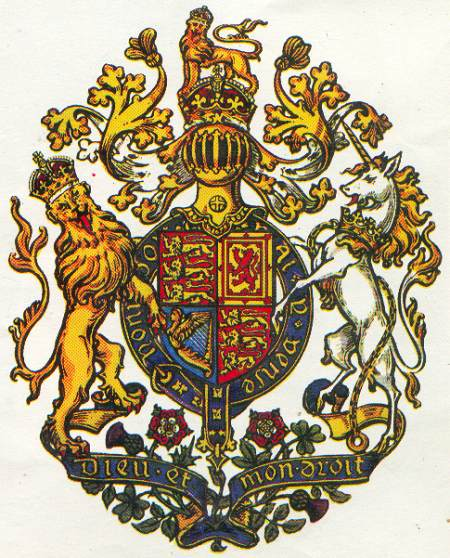

THERE are three amazing prophecies in the Bible which reveal in startling detail the status and influence of Israel in the latter days—this Christian dispensation. They are the prophecies of Jacob, Moses and Balaam, and we shall here briefly consider the contents of each. These three prophecies offer significant clues as to the present-day identity of all the tribes of Israel.
In the 49th chapter of the Book of Genesis we read how the dying Jacob called his sons together and spoke prophetically of the blessings that would come upon each tribe. Significantly, more is spoken of Joseph than of all the others. Jacob said, “Joseph is a fruitful bough, even a fruitful bough by a well; whose branches run over the wall: the archers have sorely grieved him, and shot at him, and hated him: but his bow abode in strength, and the arms of his hands were made strong by the hands of the mighty God of Jacob ... even by the God of thy father, who shall help thee; and by the Almighty, who shall bless thee with blessings of heaven above, blessings of the deep that lieth under, blessings of the breasts, and of the womb: the blessings of thy father have prevailed above the blessings of my progenitors unto the utmost bound of the everlasting hills: they shall be on the head of Joseph, and on the crown of the head of him that was separate from his brethren.”1
Similarly, Moses also blessed the twelve tribes of Israel before his death. Again, more is spoken of Joseph than of any other tribe. “And of Joseph he said, Blessed of the LORD be his land, for the precious things of heaven, for the dew, and for the deep that coucheth beneath, and for the precious fruits brought forth by the sun, and for the precious things put forth by the moon, and for the chief things of the ancient mountains, and for the precious things of the lasting hills, and for the precious things of the earth and fulness thereof, and for the goodwill of him that dwelt in the bush: let the blessing come upon the head of Joseph, and upon the top of the head of him that was separated from his brethren. His glory is like the firstling of his bullock, and his horns are like the horns of unicorns: with them he shall push the people together to the ends of the earth: and they are the ten thousands of Ephraim, and they are the thousands of Manasseh. ... The eternal God is thy refuge, and underneath are the everlasting arms: and He shall thrust out the enemy from before thee; and shall say, Destroy them. Israel then shall dwell in safety alone: the fountain of Jacob shall be upon a land of corn and wine; also his heavens shall drop down dew. Happy art thou, O Israel: who is like unto thee, O people saved by the LORD, the shield of thy help, and who is the sword of thy excellency! and thine enemies shall be found liars unto thee; and thou shalt tread upon their high places.”2
Then in Numbers, chapters 22 to 24, we have the strange story of Balaam, a backslidden prophet of God, being hired by Balak, the king of the Moabites, to curse the children of Israel who were a threat to his own people. However, Balaam found himself unable to curse Israel, and each time he opened his mouth to speak he found himself speaking words not of cursing but of blessing:
“How shall I curse, whom God hath not cursed? or how shall I defy, whom the LORD hath not defied? For from the top of the rocks I see him, and from the hills I behold him: lo, the people shall dwell alone, and shall not be reckoned among the nations. Who can count the dust of Jacob, and the number of the fourth part of Israel? ... He hath not beheld iniquity in Jacob, neither hath He seen perverseness in Israel: the LORD his God is with him, and the shout of a king is among them. God brought them out of Egypt; he hath as it were the strength of an unicorn. Surely there is no enchantment against Jacob, neither is there any divination against Israel: according to this time it shall be said of Jacob and of Israel, What hath God wrought! Behold, the people shall rise up as a great lion, and lift up himself as a young lion: he shall not lie down until he eat of the prey, and drink the blood of the slain. ... How goodly are thy tents, O Jacob, and thy tabernacles, O Israel! As the valleys are they spread forth, as gardens by the river’s side, as the trees of lign aloes which the LORD hath planted, and as cedar trees beside the waters. He shall pour the water out of his buckets, and his seed shall be in many waters, and his king shall be higher than Agag, and his kingdom shall be exalted. God brought him forth out of Egypt; he hath as it were the strength of an unicorn: he shall eat up the nations his enemies, and shall break their bones, and pierce them through with his arrows. He couched, he lay down as a lion, and as a great lion: who shall stir him up? Blessed is he that blesseth thee, and cursed is he that curseth thee.”3
These prophecies of Jacob, Moses and Balaam have at least seven common features which we will briefly consider here. They speak firstly of Israel’s GEOGRAPHICAL ISOLATION. God said, “The people shall DWELL IN SAFETY ALONE” and, “The people shall DWELL ALONE, and shall NOT BE RECKONED AMONG THE NATIONS.” As we have seen, Israel’s future home was to be in isles afar off,4 in the north-west.5 Their island location was to be a peculiar blessing, a natural wall of defence, so that they would be a people apart from the other nations. Surely this is true of Britain. Not since the year 1066 has Britain been successfully invaded. As William Shakespeare was inspired to write:
This royal throne of kings, this scepter’d isle,This earth of majesty, this seat of Mars,
This other Eden, demi-paradise.
This fortress built by Nature for herself
Against infection and the hand of war;
This happy breed of men, this little world;
This precious stone set in a silvery sea,
Which serves it in the office of a wall,
Or as a moat defensive to a house,
Against the envy of less happier lands.
This blessed spot, this earth, this realm, this England.
(Richard II, Act 2, Scene 1)
Secondly, Israel was to be blessed with GREAT NUMERICAL STRENGTH in the last days. In our opening chapter we showed that the blessing of multitudinousness was promised to Abraham, Isaac and Jacob, and to Joseph’s sons, the “ten thousands of Ephraim” and the “thousands of Manasseh.”6 The “thousands of millions” promised to Rebekah are again repeated in the prophecies of Jacob, Moses and Balaam. “Joseph is a FRUITFUL BOUGH, even a fruitful bough by a well; whose branches run over the wall ... the Almighty shall bless thee with ... blessings of the BREASTS, and of the WOMB. ... Who can count the DUST OF JACOB, and the number of the FOURTH PART OF ISRAEL?” Obviously, in order to become a great nation and a company of nations the Israel people must multiply so greatly that they would want to extend their borders and to colonize other parts of the world, as signified by branches running over a wall. This has been uniquely fulfilled in the British people. At the time of Christ the population of Britain is thought to have been no more than one million. It was not until the time of the Norman invasion of 1066 that the two million was reached. The population increased to 3 million by the year 1500 and 4 million by 1600, 5½ million by 1700, then 6½ million by 1750. In 1801 the population was 15¾ million, increasing to 28 million by 1851, and 41½ million in 1901. Today, the population of Britain totals some 55 million people. A contemporary historian has written, “Britain’s population rose very rapidly, in a manner unprecedented in the past history of any European country ... the increase of numbers in Great Britain has not in general histories received the emphasis it deserved ... a country whose people were multiplied more than sixfold in less than two hundred years.”7
Nor do these figures take into account the enormous population explosion in the USA. The first British settlers arrived in America from Britain in the Mayflower in 1620. Thereafter about half-a-million people emigrated from England to America. At the time of the War of Independence, 1776&Ndash;1783, the population numbered two million. By 1801, the Anglo-Saxon-Celtic population had doubled to almost four million. Today the population of the USA is about 250 million, of which half must be reckoned to be of basic British stock. (According to Charles Edward Banks in his The English Ancestry and Homes of the Pilgrim Fathers, the earliest colonists were predominantly from East Anglia. This was the home of the Angles, who came to Britain in the fifth and sixth century AD, originally two kindred peoples, the Angæ and the Aeglæ. The latter name derives from the Hebrew äìDaggerâXòY eglah = heifer or ox, which was the tribal symbol of Ephraim.)
We must then take into account the population of the other British colonies. The Appendix contains a survey of the British Empire in 1921, with figures added for the USA. It will be seen that the total population of the peoples embraced by Britain and America is 547 million, almost one-third of the total population of the world. The British Empire and the United States of America together covered more than one-quarter of the earth’s surface area. No other people in the world increased so greatly in numbers as did the BRITISH people after 1799.
Closely associated with this population explosion and Israel’s consequent migration to the west, the east, the north and the south, we must observe thirdly, her MILITARY STRENGTH. Jacob said, “The archers have sorely grieved him, and shot at him, and hated him: but HIS BOW ABODE IN STRENGTH, and the arms of his hands were made strong by the hands of the mighty God of Jacob.” Moses said, “His glory is like the firstling of his bullock, and his horns are like the horns of UNICORNS: with them he shall push the people together to the ends of the earth. ... He shall thrust out the enemy from before thee; and shall say, destroy them.” Balaam said, “He hath as it were the strength of an UNICORN ... the people shall rise up as a great LION, and lift up himself as a young LION. ... He shall eat up the nations his enemies, and shall break their bones, and pierce them through with his ARROWS. He couched, he lay down as a LION, and as a GREAT LION: who shall stir him up?"
 Time and again Britain has defeated her enemies against overwhelming odds. At Crécy in 1346, 30,000 Englishmen defeated an army of 120,000. At Poitiers in 1356, the English army of 10,000 routed the French army though outnumbered six-to-one. At the Battle of Agincourt in 1416, the English army lost only 1,600 men as against 24,000 lost by the French. As recently as 1940, the Royal Air Force, though hopelessly outnumbered, defeated the mighty striking power of the German Luftwaffe. Our book Judgment on Britain (free on request) contains a whole chapter of similar victories. Truly the arms of the English people have been made strong by the hands of the mighty God of Jacob. Balaam said that Israel in the last days would have the strength of a UNICORN and rise up as a great LION. Can it be only coincidence that the British coat of arms depicts the LION AND THE UNICORN?
Fourthly, God said that Israel would be a great MARITIME POWER, blessed with the blessings of the sea. “The Almighty shall bless thee with ... BLESSINGS OF THE DEEP THAT LIETH UNDER ... Blessed of the LORD be His land ... for the DEEP THAT COUCHETH BENEATH ... His seed shall be in MANY WATERS ... and his kingdom shall be exalted.” We have already pointed out the singular blessing Israel was to enjoy as an island race, God thus providing the sea as a natural fortress against invasion. In addition, Britain has one of the greatest fishing industries in the world, truly enjoying the blessings of the deep that were promised to Joseph’s race.
God said also that this great maritime power would, in the last days, control the oceans and seas of the world. She would POSSESS THE GATE OF HER ENEMIES, the strategic gateways of the world such as the Suez Canal, Gibraltar, Singapore, Cape Town, the Falkland Islands, Hong Kong and Panama. During the last 150 years Britain and America have occupied and controlled every major sea-gate in the world. This has been an important factor in Britain’s fulfilment of her role as a world power. James Thompson’s Rule Britannia remarkably expresses this fact:
When Britain first, at Heaven’s command,
Arose from out the azure main,
This was the charter of the land,
And guardian angels sang this strain:
“Rule, Britannia, rule the waves;
Britons never shall b
e slaves!”
Fifthly, Israel was to be blessed with great MINERAL RESOURCES which would make her the wealthiest nation in the world. “The blessings of thy father have prevailed ... unto the utmost bound of the EVERLASTING HILLS ... Blessed of the LORD be his land ... for the CHIEF THINGS OF THE ANCIENT MOUNTAINS, and for the PRECIOUS THINGS OF THE LASTING HILLS, and for the PRECIOUS THINGS OF THE EARTH AND FULNESS THEREOF.” This clearly refers to silver and gold, precious stones, base metals, coal and iron and oil. The British Commonwealth produced two-thirds of the world’s gold, most of it coming from South Africa. We possessed 95 per cent of the world’s nickel, 80 per cent of the aluminium, 75 per cent of the zinc. Together Britain and America dominated the world in the production of lead, copper, tin and other precious metals. Britain and America mined one-and-a-half times as much coal as all the other nations of the world combined. We produced three-quarters of the world’s steel and two-thirds of the world’s rubber and we utilized two-thirds of the world’s total output of electricity. The USA alone produced more than one-half of the total output of petroleum, while Britain has continued to find oil and natural gas under the North Sea. Who put these enormous resources of mineral wealth under the earth and sea? And since they were promised to Israel in the last days, who else can Britain and America be, but God’s Israel people?
Sixthly, God said that Israel would be blessed with the PRODUCE OF THE EARTH. “And of Joseph he said, Blessed of the LORD be his LAND, for the PRECIOUS THINGS OF HEAVEN, FOR THE DEW ... FOR THE PRECIOUS FRUITS BROUGHT FORTH BY THE SUN, and for the PRECIOUS THINGS PUT FORTH BY THE MOON.” Here God speaks of the natural produce of the earth brought forth by the sun and rain and by the seasons. We remember God’s promise that the land to which Israel went would be “a land of hills and valleys, and DRINKETH WATER OF THE RAIN OF HEAVEN: a land which the LORD thy God careth for: the eyes of the LORD thy God are always upon it, from the beginning of the year even unto the end of the year.”8
It is a fact that Britain’s “green and pleasant land” enjoys one of the best climates and is one of the most productive in the whole world. Likewise, wherever Britain has colonized lands across the seas, they have been transformed from wilderness and desert into a fruitful oasis. The British Commonwealth today produces apples, oranges, plums, pears, peaches, pineapples, bananas, apricots and grapes. In addition, Britain, America and the Commonwealth have more than 220 million sheep, while all the rest of the world has only about 182 million. We also possess 60 per cent of the world’s cattle, with America coming first and the Commonwealth second in the production of milk, butter and meat.
A geographically isolated people dwelling securely, great in numbers and military strength, the greatest colonial and maritime power, a people blessed with phenomenal mineral resources and a productive land, the wealthiest people in the world, all these the very blessings promised to ISRAEL in the last days, all without exception being enjoyed by GREAT BRITAIN, the COMMONWEALTH and AMERICA : how, in the face of such irrefutable evidence can anyone deny the identity of the British and kindred peoples? What more outstanding evidence could one require of the unfailing promises of God? Truly, “according to this time it shall be said of Jacob and of Israel, What hath God wrought!”9
Land of hope and glory,Mother of the free:
How may we extol thee
Who are born of thee?
Wider still and widerShall thy bounds be set;
God who made thee mighty
Make thee mightier yet!
(Arthur C. Benson, 1862&Ndash;1925)There is, however, a seventh feature in these prophecies concerning Israel which is so important that we must deal with it in a separate chapter. There is a question we have to ask, and if we can find the answer we shall for ever settle the identity of God’s Israel people.
Next chapter | back to Contents | Interesting details on the coat of arms are here